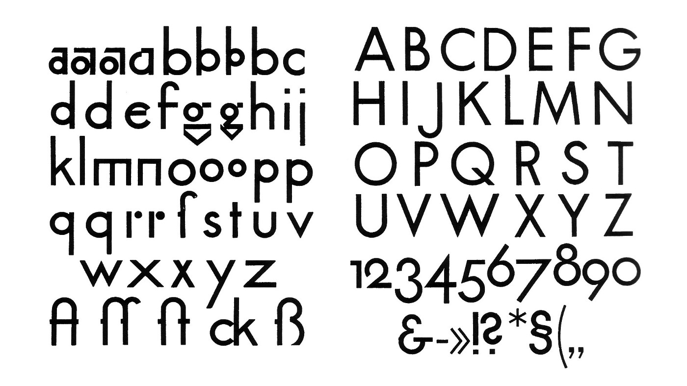

Futura is a geometric sans-serif typeface designed by Paul Renner and released in 1927. [1] It was designed as a contribution on the New Frankfurt-project. It is based on geometric shapes, especially the circle, similar in spirit to the Bauhaus design style of the period.[2][3] It was developed as a typeface by the Bauer Type Foundry, in competition with Ludwig & Mayer's seminal Erbar typeface of 1926.[4][5] 